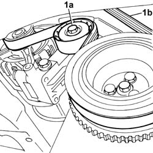

1092B40 air conditioner compressor/alternator drive belt - r + r
- Path
- Procedures > 10 ENGINE UNIT > 1092 VARIOUS ENGINE COMPONENT CONTROLS > 1092B water pump and alternator drive > 1092B40 air conditioner compressor/alternator drive belt - r + r
- Kind
- repair procedure (removal / refitting; the operation number is the code)
- Applies to
- engines: 1.1, 1.2 8v; all production periods
- Interactive page
- https://sloeber94.github.io/elrnDB-fPnd/en/#/2752556
Applies to: engines: 1.1; all production periods
 Removing
Removing
 Refitting
RefittingPlace the car on a lift.
Raise the car.
1. Work on the automatic tensioner (1a) and release the belt (1b) and remove it.

Applies to: engines: 1.2 8v; all production periods
Removing
RefittingPlace the car on a lift.
Raise the car.
1. Adjust the automatic tensioner (1a) and release the belt (1b) and remove it.
Applies to: engines: 1.1; all production periods
Refitting
RemovingPartly fit the belt.
Work on the automatic tensioner and completely fit the alternator and air conditioning compressor drive belt.
Lower the vehicle.
Remove the vehicle from the ramp.
Applies to: engines: 1.2 8v; all production periods
Refitting
RemovingPartly fit the belt.
Adjust the automatic tensioner and completely fit the alternator and air conditioning compressor drive belt.
Lower the vehicle.
Remove the vehicle from the ramp.
Topics that link to this page (17)
- 0510A20 timing gear with belt drive - check - carry out operation with cam cover(s) removed and tappets adjusted
- 0510A30 cam lift - check with cam cover(s) removed
- 1016C11 SINGLE CYLINDER HEAD-R R GASKET FOR VERSIONS WITH AIR CONDITIONER
- 1020D16 FRONT CRANKSHAFT OIL SEAL COVER - R+R AND REPLACE GASKETS FOR VERSIONS WITH AIRCONDITIONER
- 1020D20 FRONT CRANKSHAFT COVER OIL SEAL - REPLACE FOR VERSIONS WITH AIR CONDITIONER
- 1028H21 piston with connecting rod - r r
- 1032B14 toothed timing belt - r + r for timing adjustment or replacement versions with air conditioner
- 1032B47 toothed drive pulley - r r for versions with air conditioner
- 1032B53 driven toothed pulley (one) - r r for versions with air conditioner
- 1032C19 mobile timing belt tensioner - r r for versions with air conditioner
- 1032D12 timing system protective cover(s) - r + r
- 1036B10 overhead camshaft - r r on vehicle
- 1088C12 water pump - r+r for versions with air conditioner
- 1092A12 crankshaft pulley - r+r for versions with air conditioner
- 1092B42 Air conditioning compressor and alternator drive belt TENSIONER - R.R.
- 5040A26 compressor mount - r r
- 5530A14 alternator - r+r for versions with air conditioner